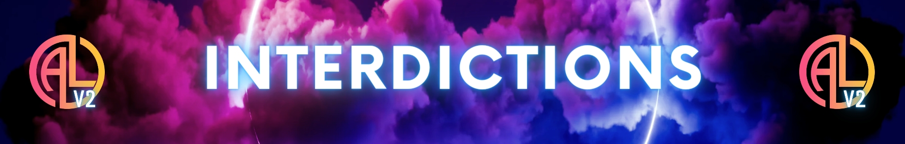

Règlement Général
- Si tu as des questions n'hésite pas a ouvrir un ticket sur le serveur discord et des Helpeur
s'occuperons de toi.
- Nous t'invitons à prendre en compte le règlement qui suit, Tu dois le lire et l’appliquer. Il sera
considéré comme lu et maîtrisé dès lors que tu intégreras le serveur. Il pourra être mis à jour, au
quel cas tu en seras informé.
- Fairplay, Cohérence et Théâtre sont les principes fondamentaux d’Active Life. Tu dois les respecter
en toutes circonstances.
- Le respect est le maître mot pour l’ensemble du Staff, merci d’appliquer les règles de politesse.
Les insultes, le racisme, le sexisme, l'homophobie, la transphobie et toutes autres calomnies seront
sévèrement punies.
- Le Staff d’Active Life sera à ton écoute et la discussion sera toujours ouverte pour t'aider quel
que soit ton besoin.
- Le serveur est accessible aux joueurs majeurs avec un droit de parrainage pour les plus jeunes.
- Méta Gaming : C’est l’utilisation d’informations HRP dans un contexte RP.
- Powergaming : C’est la réalisation d’actions impossibles dans la vie réelle.
- Mass RP
: C’est la population, objets, etc... autre que les joueurs connectés. Il faut prendre en compte les
milliers
d’habitants de la ville ainsi que l’heure et le lieu où vous vous trouvez.
- Raccourci RP : Ça peut être oublier le MassRP, penser véhicule jaune = vagos, tenue bleue = mara…
- No Fear : Le fait de ne pas
jouer la peur et les menaces.
- No Pain : Le fait de ne pas jouer la douleur (physique ou émotionnelle)
de votre personnage et ne pas l’exprimer.
- Force RP : C’est obliger un joueur ou un groupe à faire une
scène sans laisser de porte de sortie alors que d’autres situations sont possibles.
- Streamhack : C’est
utiliser des informations obtenues sur des directs/rediffusions pour les utiliser en RolePlay.
- Conduite RP : Vous n’êtes
pas dans Fast and Furious, il est interdit de rouler sur les trottoirs, de rouler à 200km/h en
ville, de
rouler
à contre sens; une seule exception : La course poursuite, qui doit rester plaisante à jouer. Vous
pouvez
faire quelques
écarts dans la limite du raisonnable et du fair play. Ne pas passer dans les zones safes, utiliser
des
tremplins, faire de l’off road etc... sous peine de sanctions.
- Retour Zone : C’est le fait de revenir
dans une zone safe ou un quartier.
- Cop Bait : C’est le fait de provoquer les forces de l’ordre pour
amener à des scènes de courses poursuites etc... sans raison valable.
- Carkill : Rouler sur les citoyens.

- Free Punch : Frapper quelqu’un sans raison valable juste pour s’amuser.
- Free kill/free loot : Tuer quelqu’un sans raison valable. Il est interdit de fouiller un cadavre
pour
récupérer un objet ou le sécuriser, même si c’est une personne de votre groupe.
- Drive by abusif : Il
est interdit de passer sans cesse dans un quartier pour tirer et montrer votre domination. Il est
interdit de
tirer en étant conducteur ou en roulant a plus de 30 km/h.
- Snake run : Il est interdit de courir de
droite à gauche pour éviter des balles par exemple.
- Revenge Kill : Il est interdit de sevenger après
s’être fait agresser ou de venger son précédent personnage en allant tuer la personne qui l’a
mort RP.
- Haine HRP : Sortir de son immersion et s’en prendre à un joueur pour des raisons HRP.
- HRP vocal :
Il est interdit d’utiliser des termes qui sortent de l’immersion, en parlant du Staff, des touches,
etc…
- Il est impératif de mettre vos Prénom et Nom RP sur discord et sur steam
en arrivant sur le serveur. Votre identité RolePlay ne doit pas contenir de jeux de mots, ne doit
pas faire
référence à une personnalité publique ou fictive. Les noms de personnes ayant commis des crimes
contre
l’humanité, d’homme politique sont également à bannir. Soyez cohérents, nous sommes sur un Serious
RP
et non
un Fantasy RP.
- Le respect mutuel est de rigueur, Staff y compris. La courtoisie doit être la clé de vos
discussions.
- Il est important de s’exprimer correctement.
- Différents
canaux sont à disposition et sont à utiliser à bon escient.
- Les liens
vers d’autres serveurs sont à bannir. Tout comme les liens menant vers des sites frauduleux, de
hack, etc…
Les fondateurs se réservent le droit de bannir personnellement toute personne ayant une activité
dangereuse
pour l’intégrité d’un joueur sur le serveur ou pour le serveur en lui-même. Toute remontée sur du
Hacking/DDOS/DOX/Menace sera lourdement sanctionné.
- Les mentions doivent être utilisées avec
modération,
mentionner un Staff est interdit.
- Les propos haineux, sexuels, politiques, religieux, homophobes,
transphobes sont interdits et passibles d’un bannissement définitif.

- Le serveur est financé par le Staff. Une cagnotte est mise en place pour
celles et ceux qui voudraient nous aider. Aucun avantage ne sera octroyé après une donation et aucun
remboursement ne sera effectué. Nous ne voulons pas de pay to win.
- Les remboursements IG : Des reboots
seront fait régulièrement, à vous de prévoir. Nous rembourserons uniquement avec une preuve de ce
que vous
avez perdu.
- Les tickets : Ils servent à faire des remontées au Staff, déposer un dossier de groupe,
déposer un dossier de mort RP, etc... La politesse est de rigueur. L'utilisation de preuves
photos/vidéos
est un bonus pour le Staff et aidera à mieux comprendre les situations.
- Les BDA : Le RP BDA n’est pas
dans notre vision du RolePlay, essayez au mieux de régler vos soucis in RP. Cependant, des Staffs
seront à
votre écoute si vous n’avez pas la possibilité de les résoudre. Si une scène se passe mal, finissez
la avant
de venir en BDA.
- La mort RP : Aucun retour en arrière possible, vous repartez de 0.
Un dossier est obligatoire, même si c’est une demande pour votre propre personnage.
Le dossier doit être complet et cohérent n’oubliez pas que vous mettez fin à votre projet ou à celui
d’un
joueur, réfléchissez bien. Le Staff se réserve un délai de 72h pour vous donner une réponse, vous
serez
informés quelque soit la
réponse. Lorsque vous vous lancerez dans un projet avec votre personnage soyez sûr de vous, vous
devrez
jouer avec lui pendant minimum 3 semaines. Le Staff a le droit de sanctionner tous joueurs d’une
mort RP.
- Les zones safes sont : LSPD, EMS, parking central, SPAWN.
- Les zones interdites sont : prison, base militaire, porte-avion.

- Le warn vocal : Avertissement oral suite à une erreur en RolePlay.
- Le
warn de groupe : Si un groupe réalise une scène hors de la vision du serveur, il sera convoqué par
le Staff
et écopera d’une sanction de groupe.
- La mort RP : Le Staff se réserve le droit de vous mort RP,
c'est-à-dire faire mourir votre personnage dès le deuxième Warn IG ou en cas d’erreur très grave de
votre
part allant à l’encontre du serveur.
- 1er warn : 24h / 2ème : 48h / 3ème : ban déf
- Le bannissement
définitif : Si trop d’infractions au règlement sont commises par un joueur ou qu’il est considéré
comme un
danger pour le RolePlay du serveur, le Staff se réserve le droit de vous exclure du serveur.

- Le dossier doit comprendre : Nom de l'entreprise, Hiérarchie, Dossier
personnalisé au serveur, Activité de l’entreprise, Pourquoi votre entreprise, Conclusion.
- Pour présenter
votre dossier à l’équipe il vous suffit d’ouvrir un ticket et d’y ajouter le lien de votre dossier
sous
format
google docs/slides…
- Une entreprise peut recruter 15 employés maximum hors patron et co-patron.
- Une semaine de travail commence le dimanche et se termine le dimanche.
- Toute entreprise doit verser des
impôts au gouvernement actuel, si ces impôts ne sont pas payés à temps, le
gouvernement aura le droit de fermer l’entreprise.
- A votre prise de service, vous êtes dans
l’obligation d’utiliser un véhicule de fonction ainsi que porter la tenue de travail de
l’entreprise.
- Les services gratuits à vos amis sont interdits.
- Les métiers suivants ont
interdiction de pratiquer des activités illégales : Services gouvernementaux, Services locaux (LSPD,
BCSO,
EMS), Services fédéraux (Pôle Justice, FBI...),Ammunation, Agence Immoblière et Brink's.
- Les entreprises
suivantes ne peuvent pas avoir un Patron ou un Co-Patron pratiquant des activités illégales :
Concessionnaire, Weazel News, Auto-école, EMS et les Mécanos.

- Vous souhaitez déposer un dossier de groupe, voici les prérequis :
- Gang: Minimum 10 membres, Maximum 20 membres (+3 slots habitants), 15 sur scène maximum.
- MC : Minimum 15
membres, Maximum 25 membres, 20 sur scène maximum.
- Organisation : Minimum 15 membres, Maximum 30
membres.
- Par Fairplay, nous demandons un maximum de 20 membres d’un même groupe sur scène.
- Votre
dossier doit être complet et personnalisé : Votre vision du RolePlay, Vos ambitions à court, moyen
et long
terme, Le background du groupe et de ses membres, Pourquoi vous, Discord, Qu’allez vous apporter au
serveur
?
- Les gangs hors lore ne sont pas acceptés. Il est préférable de respecter les quartiers, véhicules
des
groupes.
- Votre dossier sera à déposer dans par le biais d’un ticket si vous êtes déjà sur le serveur,
si vous êtes nouveau, le lead se verra convoqué en BDA.
- La hiérarchie des groupes sera basée comme ceci
: Organisation, MC/Gangs, Habitants, Petites frappes.
- Elle n’impose pas de fear, tout doit être fait en
RP. ATTENTION À BIEN SUIVRE UNE CERTAINE COHÉRENCE RP.
- La mentalité gunfight ne sera acceptée sur le
serveur qu’en dernier recours. Nous vous demandons de privilégier les scènes théâtrales, de
discussion, etc
.. En cas de scènes de GF, restez fair play. Vous ne pouvez pas déplacer les corps de vos amis
tombés lors
du gunfight pour les ramener dans votre quartier par exemple. Les packs graphiques GF/clear night
seront
bannis.
- Le lead d’un groupe à le droit de kick-projet sur son effectif, il devra cependant en informer
le Staff avec la raison.
- Le lead d’un groupe pourra être destitué si 90% de l’effectif est d’accord. Un
dossier doit être présenté au
Staff.
- ------------------------------
- Braquages :
- ------------------------------
- Citoyen : le racket est autorisé dans la limite du raisonnable et
pas pour
s’amuser. 50% de la totalité de son inventaire peut être pris par Fairplay.
- Maison : Intervalle d’une
heure entre chaque cambriolage par groupe.
- Supérette : 2 heures d’intervalle entre les braquages par groupe
: pas d’otage demandé (Apu n’en ai pas un).
- Entreprise : 1 par semaine et par groupe : pas besoin d’otage, sachez que les entreprises ont des
caméras de
surveillance et que le LSPD doit être au courant de l’action par Fairplay. Vous pouvez prendre
jusqu'à 30%
du coffre.
- Bijouterie : 1 par semaine et par groupe : 2 otages demandés.
- Petite banque : 1 par
quinzaine et par groupe : 3 otages demandés.
- Banque centrale : 1 par groupe. 5 otages demandés : Sur
dossier, Risque de mort RP ou de prison fédérale à vie sur la scène
- Il est obligatoire d’attendre
l’arrivée du LSPD. S’ils ne sont pas sur place 10 minutes après avoir été prévenus, vous pouvez
partir.
- Privilégiez le dialogue, ne soyez pas bloqué dans votre vision de la scène.
- Il est interdit
d’obliger un citoyen à retirer de l’argent à un ATM/Banque.
- Les otages complices sont strictement
interdits.
- Il est interdit de donner des informations gratuitement. Soyez créatifs, et restez cohérents.
Ne jouez pas sur votre supériorité pour obtenir des informations facilement.
- Les alliances sont
interdites. Des cessez le feu peuvent subsister durant 15 jours maximum.
- La vente de drogue est
autorisée de 16h à 2h du matin. Prenez en compte le Mass RP, ne vendez pas dans votre quartier. Vous
ne
pouvez pas vendre en motos.
- Les petits braquages (maison/superette/racket) peuvent être réalisés de 18h
à 2h.
- Les braquages plus conséquents (entreprise/bijouterie/banque) peuvent être réalisés entre 20h et
1h du matin.
- Il est interdit de faire de l’off road sans véhicule adéquat.
- Il est interdit d’avoir
plus de 2 patrons au sein de votre groupe, soyez cohérents et logiques.
- Le théâtre doit être présent
également dans l’illégal, rendez vos scènes plaisantes à jouer pour les deux parties, le dialogue
est
important.
- Libre à chaque groupe de revendiquer des zones d’influences, des trafics ou encore des
couleurs. Attention à rester cohérents encore une fois et à éviter les raccourcis.
- Un système
d’évolution est possible sur Active Life. Un groupe de petites frappes peut monter un gang, un
gang peut passer organisation criminelle si ce dernier en à les capacités etc.. Pensez toujours à la
cohérence RP. La qualité du RolePlay du groupe sera prise en compte dans la décision d'évolution.
Vous
pourrez déposer un dossier complet via un ticket.
- Nous demandons aux membres de l’illégal de développer
leur personnage civil également. Cela passe par les métiers, les connaissances, les soirées
etc...
- L’armement est bridé par le Staff pour garder un certain équilibre dans les intéractions entre
chaque groupe.

- Vous avez l’obligation d’être en service pour agir. Si une scène qui
requiert l’intervention policière se déroule devant vous, vous devez en priorité faire appel à vos
collègues
et attendre les renforts dans la mesure du possible.
- Tout agent des forces de l’ordre lorsqu’il est en
uniforme est équipé de bodycam. Elles peuvent être utilisées de manière RP comme preuves d’un délit.
Mais
attention à ne pas en abuser et rester fair play.
- Herses : Les herses sont autorisées mais à utiliser
intelligemment et avec parcimonie. Elles sont utilisées pour tenter de faire barrage après de
longues
courses poursuites, pas pour empêcher la poursuite de démarrer.
- PIT : Les manœuvres “PIT” ne sont
autorisées qu’au bout de 10 minutes de course poursuite, et par ordre d’un commandant ou capitaine
de
police, et quand le danger pour les citoyens devient trop grand à cause d'une conduite trop
dangereuse de la
part du suspect.
- Il n’y a pas de zones de non-droit. Les forces de l’ordre sont donc dans l’obligation
de patrouiller, enquêter et intervenir même dans les quartiers “chauds”. Des mesures de sécurité
sont
cependant à prendre pour intervenir dans ces quartiers.
- N’oubliez pas que vous êtes avant tout au service de la loi et de la justice ! Vous oeuvrez pour une
ville
calme, ou personne n’aurait peur de s’y ballader avec sa femme ou ses enfants.
- Le double-jeu (Ripoux)
est strictement interdit, sauf avec l’aval du Staff, tout cela avec un dossier cohérent, et
complet. Vous
vous exposez néanmoins bien plus à une mort RP.
- Les agents infiltrés seront très limités et devront
soumettre un dossier au Staff avant d’être validé.
- Les agents infiltrés dans un groupe ne sont pas
libres pour autant de commettre des meurtres ou autres délits impunément. Il faut connaître les
limites a ne pas dépasser pour ne pas craindre d'être accusé de trahsion.
- Être ripoux ne donne pas tous les droits, la suppression de casiers judiciaires dans le MDT est
interdite
sauf avec accord du Staff.
- Être ripoux ne vous autorise pas à "Farmer les points de drogues”, c’est
interdit si vous êtes membre des forces de l’ordre (exception pour les agents infiltrés).